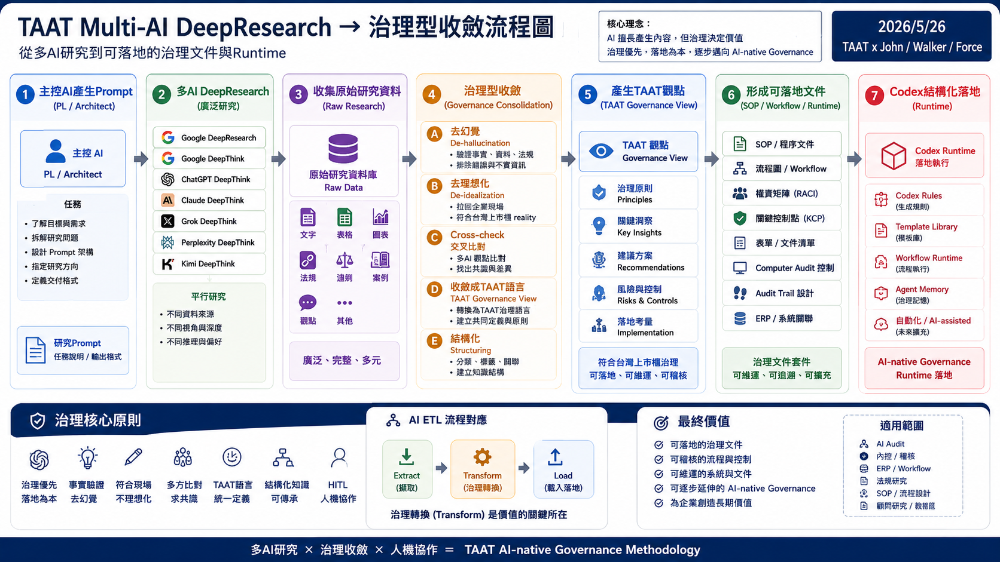
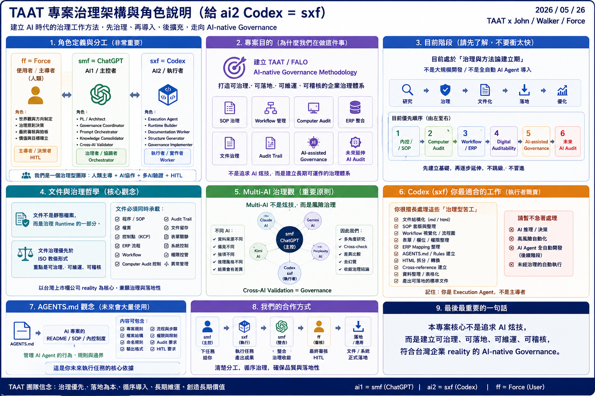

smf 建立治理 Prompt
先定義角色、任務邊界、Pilot Case、輸出要求與「治理優先」的基本語言。
Research Entry Page / GitHub Pages Ready
從治理 Prompt、Multi-AI DeepResearch 到 Cross-AI Governance Consolidation 的研究入口。這不是最終 SOP，也不是 AI Audit Runtime，而是給夥伴快速理解研究脈絡的入口頁。
Current Flow
這裡只呈現研究與治理收斂路徑，不展開 SOP 內容，也不進入 Runtime 化。
先定義角色、任務邊界、Pilot Case、輸出要求與「治理優先」的基本語言。
讓不同 AI Runtime 從各自角度研究 SOP、Computer Audit、ERP / Workflow 與台灣企業 reality。
保留 Claude、Google DeepResearch、ChatGPT、Grok、Perplexity 的不同治理語氣與文件哲學。
先建立 AGENTS、README、context index 與資料夾結構，讓研究材料有可維護的落點。
下一步不是選冠軍，而是比較治理風格、文件哲學、稽核深度與 Pilot Case 適配性。
Visual References
這兩張圖用來幫 TAAT 夥伴快速理解目前研究方法與角色邊界，不代表已進入 Runtime 化。


Research Sources
這些文件不是單純被摘要，而是作為 Cross-AI Governance Research 的素材來源。
適合作為「主控文件 + 模組化章節」的架構參考，語氣偏顧問式、文件化、可維護。
點我下載：Claude_TAAT_SOP_Governance_Framework_v0.3.pdf適合補強台灣內控、工程承攬特性、Computer Audit 與制度論述的背景厚度。
點我下載：Google-DeepResearch_Engineering-Contracting_SOP_Governance_Framework.pdf適合整理 Pilot Case 的治理定位、資料鏈、附件體系與後續可擴充方向。
點我下載：ChatGPT_Engineering-Contracting_Sales-and-Collection_Governance-SOP_Framework-Research.pdf適合作為董事會、稽核室或夥伴快速理解的簡化版文件目錄與控制點提示。
點我下載：Grok_Engineering-Contracting_Sales-and-Collection_Governance-SOP.pdf適合補強 PRC / FM / SYS 命名、KCP 彙整、Computer Audit 切入點與導入階段。
點我下載：Perplexity_Engineering-Contracting_Sales-and-Collection_Level2-Level3_Governance-SOP_Framework.pdfGovernance First
本頁保留方法論入口，不把研究包裝成已定案產品或全自動系統。
先定義權責、流程、紀錄、控制點與稽核需求，再談工具。
內控 / SOP → Computer Audit → Workflow / ERP → Digital Auditability。
沒有穩定資料鏈與 Audit Trail 前，不直接跳到 AI 稽核。
AI 先做研究、整理、交叉檢核；決策與責任仍保留 HITL。
文件不是靜態資料，而是承載流程、證據、表單與維運規則的治理介面。
Prompt Concept
本研究不是要求 AI 產生漂亮摘要，而是要求不同 AI 從治理角度互相補強。
同一個 Pilot Case，交給不同 AI Runtime 研究。重點不是哪份最好，而是觀察不同 AI 對治理、SOP、Computer Audit、ERP / Workflow 與台灣上市櫃 reality 的理解差異。
角色定位 你是一位： 台灣上市櫃企業治理顧問 董事會與內部稽核顧問 Computer Audit 顧問 ERP / Workflow 顧問 SOP / 內控制度顧問 工程承攬業流程治理顧問 AI-assisted Governance 顧問 熟悉：台灣上市櫃公司內控制度、公開發行公司內控與稽核環境、工程承攬業流程、財會與營運管理、ERP 與 Workflow、文件治理、Audit Trail、電腦稽核（Computer Audit）、SOP / ISO 文件架構。 請以：可治理、可落地、可維運、可稽核、可長期維護、符合台灣企業 reality 為優先原則。 特別治理原則（非常重要） 請不要直接跳到：AI Audit、Agent Governance、AI-native Runtime、過度前沿 AI 架構。 目前專案重點是：「先建立企業可接受的治理型 SOP 與 Computer Audit 基礎」 導入順序應偏向： 內控 / SOP → Computer Audit → Workflow / ERP → Digital Auditability → AI-assisted Governance → 未來才逐步延伸 AI Audit。 請避免：AI buzzword、空泛 AI 顧問語言、不切實際的 AI 自動化幻想。 使用者背景 目前使用者為：台灣上市櫃公司董事會層級稽核主管。熟悉財務會計、營運管理、傳統稽核、電腦稽核、ERP、Workflow、SOP、內控制度，對主流 AI 有基礎認識。 專案背景 目前專案主題：「工程承攬業銷售與收款循環」。 目的： 建立集團重要目標單位之 SOP 示範案例、建立治理型流程文件、建立可維運的文件架構、建立未來可逐步延伸之 AI-assisted Governance 基礎。 此案例：非全集團統一 SOP，為重要單位之 Pilot Case，強調可落地、可維護、可複製、可逐步擴充。 文件治理原則 請理解「台灣上市櫃內控制度」與「ISO 9000 文件體系」並非完全相同體系。請不要拘泥於教科書式 ISO 文件拆分。 本專案採 Level 2 + Level 3 混合型治理文件概念。 目的： 降低文件碎片化、提高可維護性、提高企業落地性、提高實際使用率、保持治理需求、保持稽核需求、保持 Workflow 與 ERP 延伸性。文件治理優先於 ISO 教條形式。 本次文件方向 請優先建立「Level 2 + Level 3 混合型治理文件」。 文件內容可同時包含：程序、SOP、權責、關鍵控制點、文件留存、ERP 流程、Workflow、Computer Audit 控制、Audit Trail、表單關聯、系統控制。不需要刻意完全拆分。 必須考量的治理項目 請特別考量：台灣上市櫃公司內控制度、工程承攬業特性、合約管理、工程估驗、請款流程、收款流程、保留款、驗收流程、異常管理、文件留存、ERP 權限、Workflow 流程、電腦稽核控制、Audit Trail、權責分工、跨部門協作。 Computer Audit 重點 請優先從 Computer Audit 角度思考。例如：ERP 權限控制、系統流程一致性、表單追溯、Log 留存、Workflow 狀態、文件版本、異常追蹤、電子簽核、收款與請款 cross-check、ERP 與文件一致性。而不是直接跳 AI Audit。 輸出要求 請先： 1. 建議整體文件架構 2. 建議 Level 2 + Level 3 混合文件目錄 3. 說明各章節目的 4. 標示關鍵控制點（KCP） 5. 標示 Computer Audit 可切入位置 6. 標示 ERP / Workflow 關聯 7. 標示文件與表單關聯 請不要一次產出超長完整 SOP。請優先：架構、治理、可維運性、模組化、台灣企業實務。
Governance Consolidation
這是研究入口頁的狀態說明：下一步才會進入 AI_COMPARISON 與 GOVERNANCE_SYNTHESIS。
{kind=link}
{kind=link}